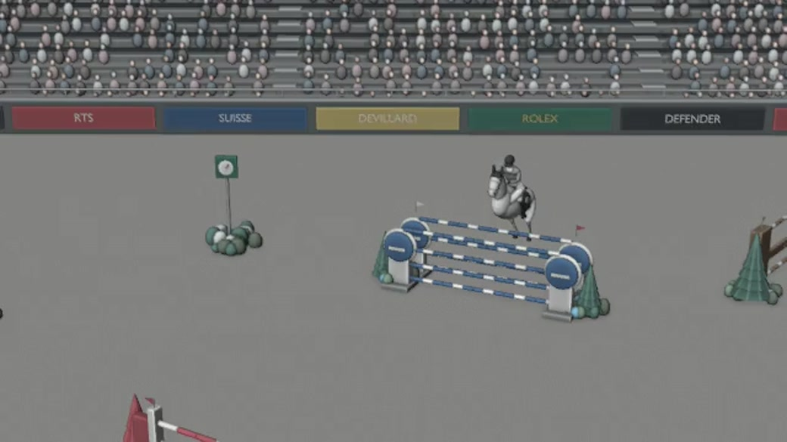

隔离重跑通过45 秒 · 640 × 360 · 24 fps
原交付含现场声，公开画面预览移除了赛事音轨。重跑确认工程内有可编辑声轨，现场声起点为 96.375 秒，偏差为 0.175 秒。
OMNIALE · WEEK 6
从一段 45 秒的多机位马术录像重建可编辑的灰模场景，再从 210 秒连续录音中对齐同一轮比赛的现场声。

用基础几何体重建马匹、骑手、障碍赛场和场边团队区，复现动作、各机位和剪辑节拍。结合落地、完赛、欢呼等声画线索，从长录音中找到同一轮比赛，把同期声挂入可编辑的 Blender 剪辑轨。
交付可独立运行的 Blender Python 脚本、可重开的工程、45 秒有声成片和同步说明。评测会在干净目录重跑脚本，再检查场景规则（40 分）、画面盲看（40 分）和可编辑音轨及同步精度（20 分）。
以 VibePrevisBench 的马术样本为基础，增加长录音检索、同期声对齐和可编辑音轨交付。上游代码采用 Apache-2.0，标注采用 CC BY-NC-SA 4.0，赛事画面与录音见原发布页。
两模型各独立跑一次，使用同一版材料和规则，画面由 Qwen3.8 Omni Flash（high）进行两轮盲看评审。
| 模型 | 场景规则 / 40 | 画面盲看 / 40 | 可编辑音轨 / 4 | 同步精度 / 16 | 总分 / 100 |
|---|---|---|---|---|---|
| Sol 6.2 | 19.64 | 27.25 | 4.00 | 15.20 | 66.09 |
| DeepSeek V4.1 Flash | 15.90 | 25.00 | 4.00 | 0.00 | 44.90 |
原交付含现场声，公开画面预览移除了赛事音轨。重跑确认工程内有可编辑声轨，现场声起点为 96.375 秒，偏差为 0.175 秒。
原交付含现场声，公开画面预览移除了赛事音轨。重跑确认工程内有可编辑声轨，现场声起点为 88.000 秒，偏差为 8.200 秒。
| 指标 | Sol 6.2 | DeepSeek V4.1 Flash |
|---|---|---|
| A1 · 实体 | 100.0% | 100.0% |
| A2 · 场地布局 | 53.3% | 28.2% |
| P1 · 构图 | 46.1% | 14.7% |
| B1 · 主体路线 | 1.8% | 0.0% |
| B2 · 事件时机 | 46.8% | 28.4% |
| C1 · 相机与运镜 | 45.6% | 29.9% |
| C2 · 切镜 | 83.9% | 87.6% |
| D1 · 物理有效性 | 15.4% | 29.1% |
| 指标 | Sol 6.2 | DeepSeek V4.1 Flash |
|---|---|---|
| V1 · 人物与场所 | 91.7% | 100.0% |
| V2 · 动作可读性 | 60.0% | 0.0% |
| V3 · 关键时刻可见性 | 87.5% | 100.0% |
| V4 · 叙事节拍 | 33.3% | 50.0% |
DeepSeek 的画面识别判票漏写两个场所 ID 的前缀，导致评分器跳过这两项，估计多计约 0.83 分。页面保留原始初评 44.90。
两次均在联网的 Windows Codex CLI 完成，退出状态为 0。下表使用实测请求档位。
| 求解模型 | 实际思考强度 | 耗时 | 请求 | 预演渲染 | 语音转写 |
|---|---|---|---|---|---|
| Sol 6.2 | xhigh | 33 分 08 秒 | 64 | 10 | 4 |
| DeepSeek V4.1 Flash | max | 40 分 47 秒 | 172 | 17 | 7 |
| 模型 | 实测起点 | 与参考偏差 | 同期声 / 20 |
|---|---|---|---|
| Sol 6.2 | 96.375 秒 | 0.175 秒 | 19.20 |
| DeepSeek V4.1 Flash | 88.000 秒 | 8.200 秒 | 4.00 |
参考起点为 96.200 秒。Sol 通过落地帧和马蹄声配对，将误差缩至 0.175 秒。DeepSeek 选到了提前 8.2 秒的片段，场边庆祝镜头开始时，音轨仍处于比赛中段。
Sol 将障碍分布在不同方位，俯拍里能辨认弧线转向，动作可读性为 60%。DeepSeek 将障碍排成一条直线，画面判票未命中三处受评动作。
两模型的切镜指标均超过 80%，主体路线却只有 1.8% 和 0%。机位切换可以从输入直接标出，要从不同角度重建马匹在同一坐标系的路线和接地关系更难。